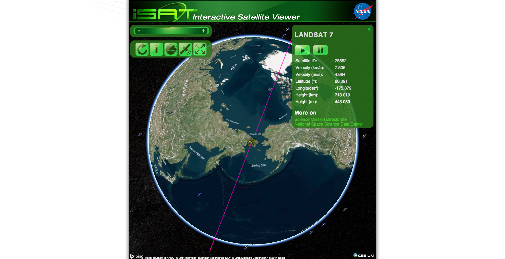

Josh Finnie
TrackMaven
iSat
iSat: A satellite tracker developed for NASA

TLE: A data format used to convey sets of orbital elements that describe the orbits of Earth-orbiting satellites.
Cesium: Cesium is a JavaScript library for creating 3D globes and 2D maps in a web browser without a plugin.
Pure JavaScript: :-(
A TLE!
ISS (ZARYA)
1 25544U 98067A 08264.51782528 -.00002182 00000-0 -11606-4 0 2927
2 25544 51.6416 247.4627 0006703 130.5360 325.0288 15.72125391563537
ISS in iSat
LOTS of math!
function newtonnu(ecc, nu) {
// --------------------------- circular ------------------------
if (Math.abs(ecc) < small) {
m = nu;
e0 = nu;
}
else {
// ---------------------- elliptical -----------------------
if (ecc < 1.0 - small) {
sine = (Math.sqrt(1.0 - ecc * ecc) * Math.sin(nu)) / (1.0 + ecc * Math.cos(nu));
cose = (ecc + Math.cos(nu)) / (1.0 + ecc * Math.cos(nu));
e0 = Math.atan2(sine, cose);
m = e0 - ecc * Math.sin(e0);
}
else {
// -------------------- hyperbolic --------------------
if (ecc > 1.0 + small) {
if ((ecc > 1.0) &&
(Math.abs(nu) + 0.00001 < Math.PI - Math.acos(1.0 / ecc))) {
sine = (Math.sqrt(ecc * ecc - 1.0) * Math.sin(nu)) / (1.0 + ecc * Math.cos(nu));
e0 = asinh(sine);
m = ecc * sinh(e0) - e0;
}
else {
// ----------------- parabolic ---------------------
if (Math.abs(nu) < 168.0 * Math.PI / 180.0) {
e0 = Math.tan(nu * 0.5);
m = e0 + (e0 * e0 * e0) / 3.0;
}
}
}
}
}
iSat on Github
Come work for TrackMaven, cooler than NASA!
THANKS!